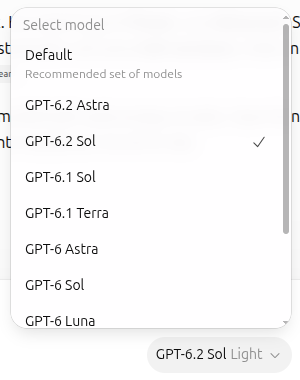

„Try it” viis Sol Lighti; Astra oli mudelimenüüs olemas
Kasutaja vajutas Astra kutsel Try it. Oodatud Astra asemel muutus senine Sol Extra High valik Sol Lightiks. Seejärel leidis kasutaja Astra mudelimenüüst.
- Vajutati Astra proovimise kutse nuppu Try it; kasutaja teatel jäi tulemuseks Sol Light.
- Avati sõnumikasti juures mudelivaliku menüü.
- Menüüs oli nähtav GPT-6.2 Astra. Kasutaja kinnitas selle leidmist ja lisas kuvatõmmise.
Seis: valik leitud, käivitumine kinnitamata. Pildil on linnuke endiselt GPT-6.2 Soli juures. Astra nähtavus ei tõenda, et see valiti või vastuse genereeris. Menüü kaudu leidmine on kinnitatud tegevus; kutse nupu püsivat parandust pole kinnitatud.
